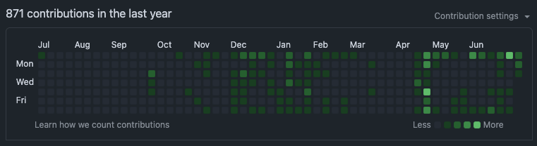

Welcome to PekoraTech 🎯
“專精收斂而非擴散” - 從第一性原理思考，專注於深度而非廣度的技術探索
🎯 核心理念
🔥 淬煉之道
🔨 『鉄打ち唄』- 如鐵匠打鐵般，透過不斷錘鍊淬煉出技術的真諦
📜 展開淬煉之歌 (點擊查看歌詞)
昏黃夜空伴爐星
進生火光拭夜色
重鎚起舞鐵笙歌
鏗鏘起落皆有聲
汝為利刃為力量
產自大地
焚木燃火
鍛金沈水
世界流轉又停滯
求金成鐵
求鐵成鋼
自鋼生刃
刃化為劍
黎明天邊閃劍芒
燦爛映輝斬黑暗
劍舞歌傳唱
致世界 生生不息
✨ 每一次刀劍的錘鍊，都是向完美的進化
“程式如鐵，需經千錘百鍊；思維如火，需持恆不斷燃燒”
正如鐵匠以汗水與執著鍛造精鋼，我們以代碼與思考淬煉技術。每一行程式都是一次錘打，每一個bug都是一次回火，每一次重構都是一次精煉。
🧠 第一性原理思考
- 需求本質：快速記錄技術心得 + 方便日後查找 + 自動整合專案經驗
- 技術選擇：Markdown 原生 > 複雜框架，現成工具 > 重新發明輪子
- 架構設計：內容分離、處理分離、部署分離
- 持續驗證：立即製作與推送，快速驗證想法可行性

⚡ KISS 原則實踐
graph LR A[想法] --> B[Markdown] B --> C[Quartz] C --> D[GitHub Pages] D --> E[世界分享]
🎛️ 高內聚低耦合
📝 內容層 - daily-code（日常心得）/ projects（深度分析）分離
🔧 處理層 - 掃描、建置、部署功能獨立
🚀 部署層 - 原始碼與靜態檔案分離
🗂️ 內容導覽
📅 每日程式碼
像技術日記一樣快速記錄開發心得，沒有絕對規劃但方便查找
最新主題：
- AI系統整合與優化實踐
- Flutter跨平台開發心得
- 記憶系統架構設計思路
- 自動化工具開發經驗
🎯 專案整合
手動撰寫的深度技術分析，整合多個專案的思考與經驗
| 專案類別 | 專案數量 | 代表專案 | 狀態 |
|---|---|---|---|
| 🤖 AI 工具鏈 | 5個 | Help Agent智能助手 AI記憶系統 | 🟢 高度活躍 |
| 🛠️ 開發工具 | 3個 | Gradio工具包 工作流建構器 | 🟢 持續擴展 |
| 📱 移動開發 | 1個 | 佩可拉計畫 - AI女友生態系統 | 🔵 實驗突破 |
| 🧩 瀏覽器擴展 | 規劃中 | Chrome/Firefox擴展開發 | ⚪ 待啟動 |
| 🎮 遊戲系統 | 規劃中 | 遊戲引擎與系統架構 | ⚪ 概念階段 |
🛠️ 技術棧概覽
核心技術
🤖 AI/ML
🐍 Python
📱 Flutter
⚡ Node.js
🎨 Gradio
🧠 Ollama
💾 SQLite
專案統計
📊 總專案數量：9+ (活躍)
🔥 高度活躍：AI工具鏈 (5個專案)
📈 持續擴展：開發工具 (3個專案)
🎯 核心領域：AI、工具開發、移動應用
🎆 重點突破：佩可拉AI女友生態系統
💡 技術深度：多模態AI協作、長期記憶系統、視覺驅動人格建構
🎨 探索方式
🔍 智能搜尋
使用頂部搜尋框，支援：
- 內容全文搜尋
- 標籤過濾
- 即時預覽
🏷️ 標籤導覽
點擊任何標籤探索相關內容： #AI Memory Flutter Gradio HelpAgent PekoraProject Workflow
🌐 關係圖譜
透過關係圖發現內容間的隱藏連結，找到意想不到的知識組合。
📱 響應式設計
完美支援桌面、平板、手機閱讀體驗。
💡 設計哲學
可維護性
- 模組化設計：每個功能獨立可測
- 配置外部化：設定與程式碼分離
- 文件優先：程式碼即文件，文件即程式碼
可擴展性
- 插件化架構：Quartz 豐富的插件生態
- API 友善：預留未來 AI 整合介面
- 版本控制：Git 為基礎的完整版本管理
效能優化
- 靜態生成：零伺服器成本，極速載入
- CDN 友善：全球快取，就近服務
- 漸進式：增量建置，只處理變更內容
🚀 最新動態
本週焦點
- 🤖 完成 AI記憶系統核心模組，實現長期情境記憶
- 🐰 佩可拉AI女友生態系統重大突破，實現圖片到人格轉換
- 🛠️ Gradio工具包最佳化，提升AI應用開發效率
- 🚀 Help Agent智能助手持續進化，新增多模態AI協作
即將推出
- 🧠 AI長期記憶系統商業化版本
- 🐰 佩可拉計畫第二階段：多角色支援與VR整合
- 📋 自動化文檔生成工具 (MCP整合)
- 🎮 第一個遊戲系統原型發佈
📈 成長軌跡
- 2025-01：AI工具鏈全面整合，佩可拉計畫啟動
- 2024-12：記憶系統架構確立，Flutter平台穩定
- 2024-11：多專案協作模式成型
- 2024-10：技術文檔化系統建立
🎯 目標願景
建立一個面向AI時代的技術創新平台：
探索 → 實驗 → 淬煉 → 突破
"在AI的浪潮中，我們不只是使用者，更是創造者。用技術點亮想像，用創新改變世界。"
🏆 核心優勢與創新
🎪 技術創新突破
- 多模態AI協作：首創視覺驅動人格建構技術
- 情感計算系統：AI長期記憶與情感發展機制
- 跨平台整合：Flutter + AI的深度融合應用
- 自動化工具鏈：從概念到部署的完整自動化
🌟 實際應用價值
- AI助手生態：智能化的工作流程輔助
- 記憶系統商業化：可應用於客服、教育、陪伴等領域
- 開發效率提升：Gradio工具包簡化AI應用開發
- 創新體驗設計：佩可拉計畫開創情感AI新領域
最後更新：2025-01-19 | 維護者：PekoraTech Team | 專案狀態：高度活躍